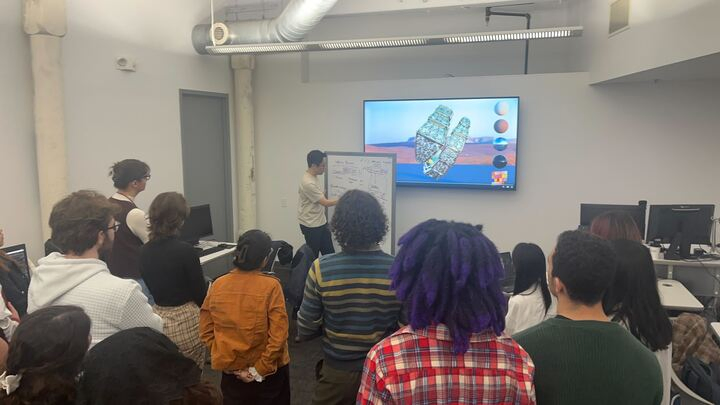
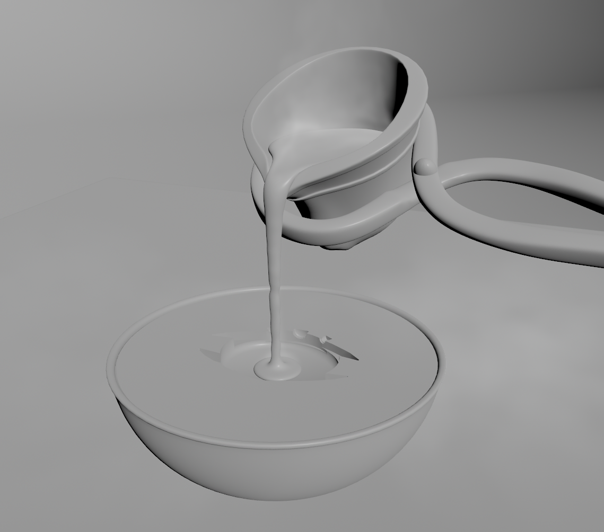
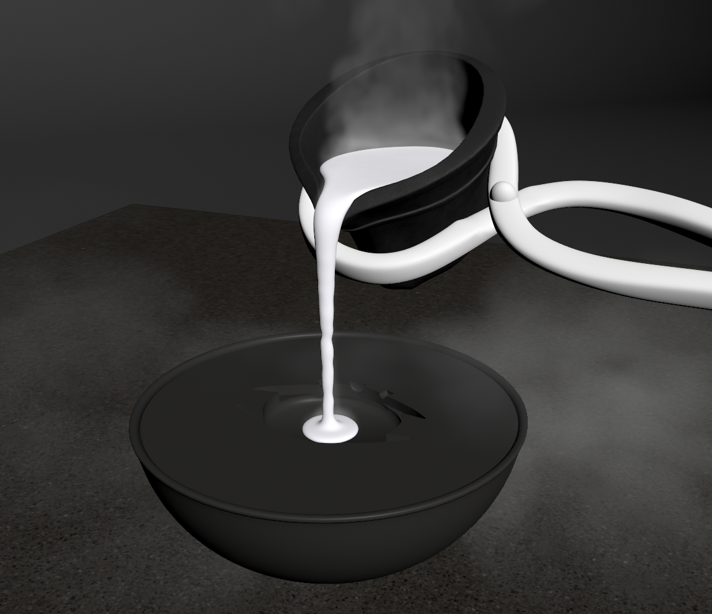
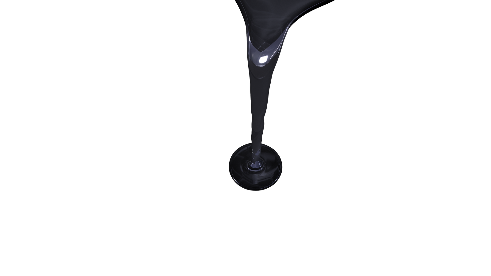
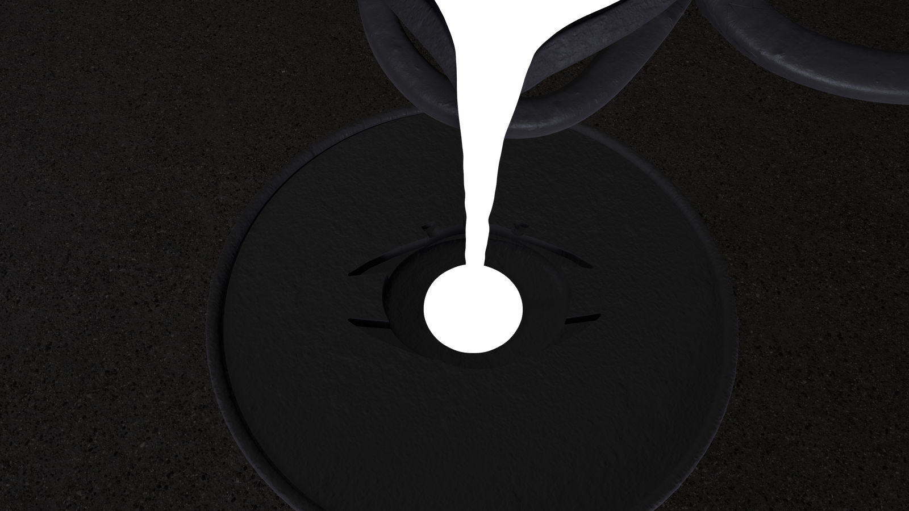
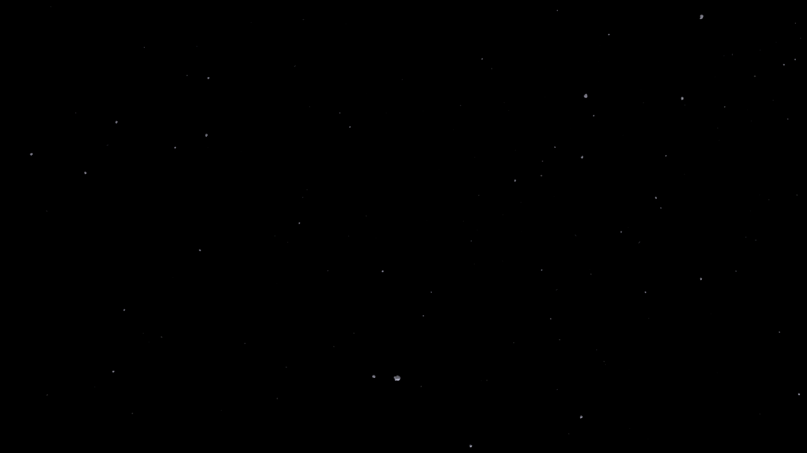

第 9 周
团队成员
3 月 8 日
Bomin Kim（特效）
Caleb Stovall（3D／2D）
Mojie Tang（特效）
Sydney Relkin（合成）
Yiqi Zheng（特效）
SCAD × HARBOR － 第 9 周
大家好，这是我 SCAD × Harbor 部落格的第九周！
上周导师们亲自来到课堂，为我们的专案提供了很多实用的建议，大家都很兴奋。我也很幸运地得到 Olivia 对我作品集的回馈。此外，Billy 为我们上了非常实用又完整的灯光与算图课。这些资讯都非常有帮助。


这周依照 Kyle 的建议，我为熔融流体加上了动态模糊。

另一件事是我们的海报，我会主要负责熔融白金的镜头，说明我遇到的问题与使用的解法。我会提供需要放进海报的资讯，最后由 Mojie 整合所有内容。以下是我想放进海报的内容。
问题：
由于这是用于表带的熔融白金模拟，要做出可控且连续的液体流动很有挑战性。流动必须稳定但不能过量，才能呈现真实又好看的效果。
主要的困难之一是找到合适的锅子角度与圆形发射范围，以维持平顺不间断的液流。发射范围太大，液体会不自然地溢出；太小，流动又会不连贯。另一个挑战是避免液体边缘破碎或看起来块状。此外，流体表现与效能之间的平衡也很重要，因为粒子数量太高会大幅拖慢模拟。




方法：
为了做出更细致、更可控的倾倒效果，我调整了倒杯的角度，并降低 pointsfromvolume 节点中的点间距，让粒子分布更细。为了进一步优化流体外观，我把 vdbsmoothsdf 节点的运算改成 Gaussian，让液体表面更平滑。
一开始我让球体持续发射粒子来产生液体，但锅子倾斜时液量会过多，导致流动不自然，也大幅拖慢模拟。为了解决这点，我改成复制多个球体，每个只发射一次粒子。经过多次迭代与调整，最后做出了稳定且视觉准确、符合预期的液体效果。
这些是我这个镜头的不同图层（4K）。



